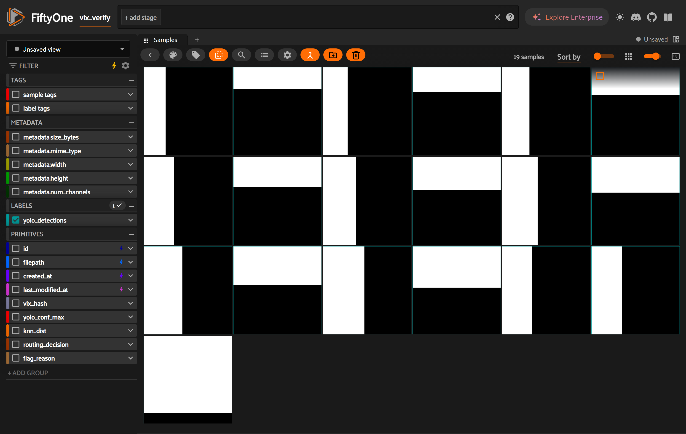
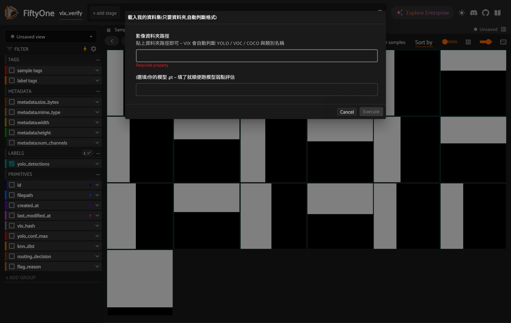
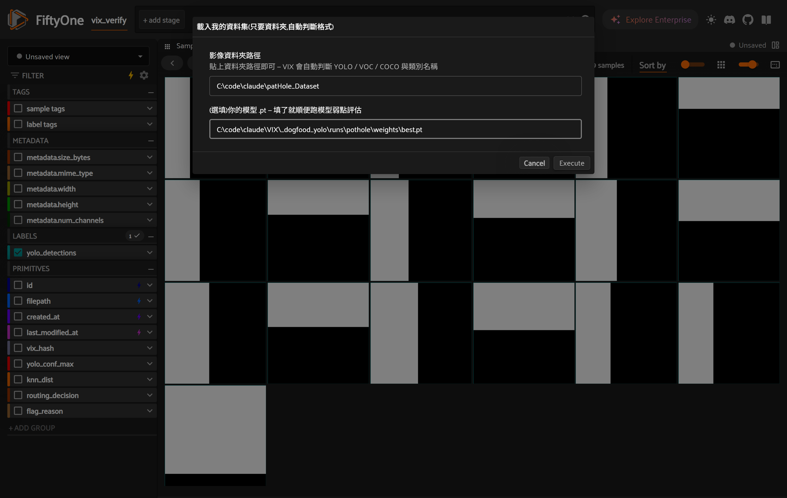
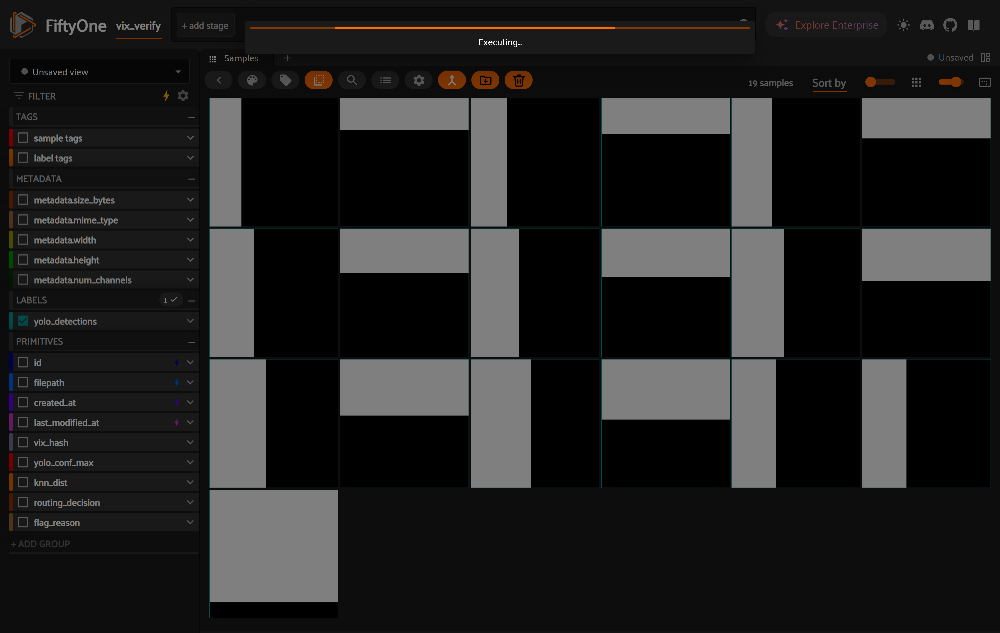
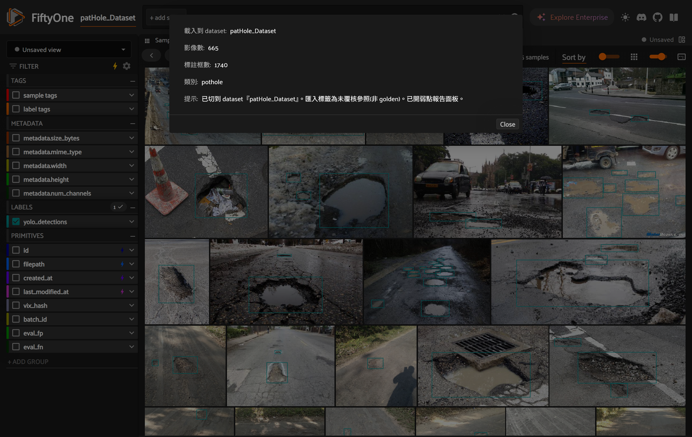
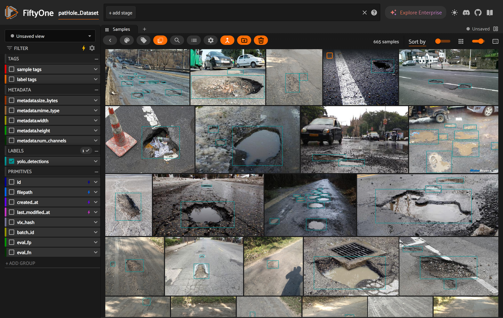

用按鈕載入你的第一份資料
從 App 初始畫面,到第一份資料(含你的模型評估)載入完成 —— 每一步都是 Playwright 在真實 App 上實際操作的截圖。
本頁示範用的資料夾
C:\code\claude\patHole_Dataset(665 張、VOC 標註)與模型
_dogfood_yolo\runs\pothole\weights\best.pt。全程在 FiftyOne App 內用滑鼠完成,不需打任何指令。- 初始畫面 —— 打開 VIX App。工具列(橘色那排)最右邊有 📁 載入 與 🗑 刪除 兩顆按鈕。

App 初始畫面(此處顯示內建 demo 資料集);📁/🗑 按鈕在格狀檢視的工具列。 - 點 📁 載入按鈕 —— 跳出「載入我的資料集」表單。只要兩格:資料夾路徑(必填)、模型 .pt(選填)。

表單刻意極簡:VIX 會自動判斷 YOLO / VOC / COCO 與類別名稱,你不用選格式。 - 填入路徑 —— 貼上你的影像資料夾與(選填)模型 .pt。

影像資料夾 = patHole_Dataset;模型 = best.pt。填了模型就會順便跑「模型弱點評估」。 - 按 Execute —— 開始匯入標籤 + 在你的影像上跑你的模型(665 張約 90 秒)。

匯入用內容雜湊把標籤對到影像;接著逐張跑模型推論並比對 GT。 - 載入完成 —— App 自動切換到你的資料集,並顯示結果摘要。

結果摘要:665 影像 / 1740 框 / 類別 pothole;header 已切到 dataset「patHole_Dataset」,你的模型評估已跑完(下一張可見側欄掛上 eval_fp / eval_fn 欄位)。 - 你的第一份資料就緒 —— 關掉摘要,格狀檢視顯示 665 張坑洞影像,每張都帶著匯入的標註框(青色);側欄出現
eval_fp/eval_fn表示模型評估已附掛。
可直接瀏覽、篩選、覆核。誠實提醒:匯入的標籤是「未覆核參照」(非 golden)。
這頁的截圖由
docs/examples/walkthrough_load.py 用 Playwright 在真實 App 上自動操作產生(App 由
examples/serve_app.py / examples/serve_dataset.py 啟動)。CLI 等價指令:
vix diagnose C:\code\claude\patHole_Dataset --weights ...\best.pt。